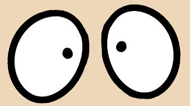
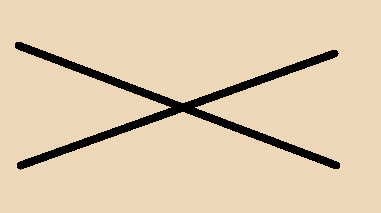
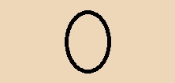

i
This statue looks like it mistreat children.
Is this ART !!!!!
I can not believe Norwegians treat children in this way


The Frogner Park
Frogner Park is a public park in Oslo. This park is the most visited attraction and adopted protected under the Heritage act in 2009, as the first park in Norway. If you want to meet other tourist, this would be the perfect place! Have fun.Nearest public transport- Majorstuen metro station
Billy Bobs notes:
I'm not so sure if I like all these nude statues, either.